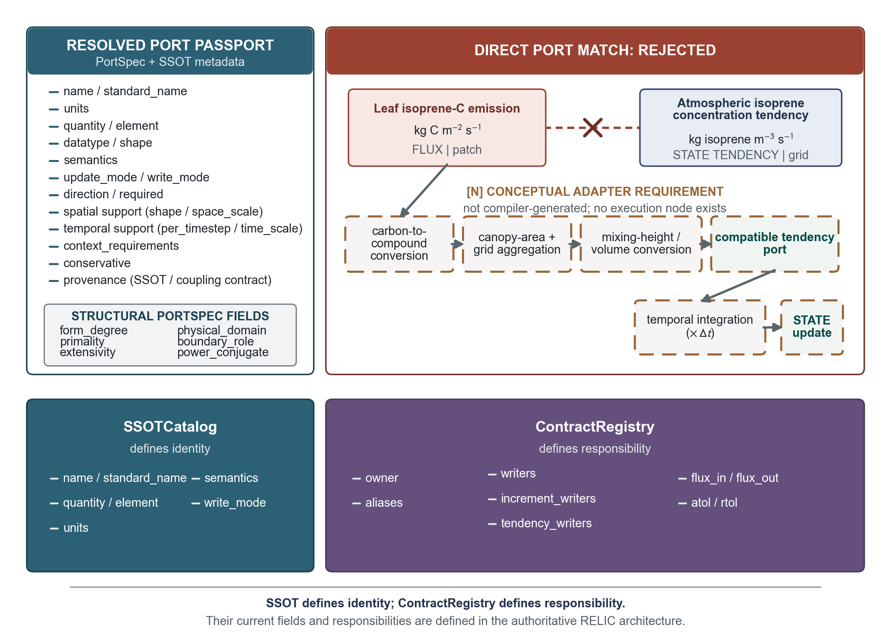

Graph 编排
canonical owners
Graph 编排是建立在现有 simulator 之上的一层，而不是第二套 runtime。
职责 |
Canonical owner |
|---|---|
可序列化图 |
|
类型化端口 |
|
由参数系统支持的变量元数据 |
|
节点与类解析 |
|
连接与图验证 |
|
Adapter registry |
|
编译与 run bundle 序列化 |
|
执行计划运行 |
|
命令行校验与编译 |
|
RELICModelCompiler 是封装 compile_graph(...) 的外观类（facade）。新增编排功能应直接扩展这些规范所有者，不得另建平行的编译器、注册表、端口模式或断言服务。
GraphIR
GraphIR 包含：
字段 |
契约 |
|---|---|
|
序列化图 schema 的版本 |
|
从节点 ID 到 |
|
显式 |
|
图级元数据 |
|
可选的结构断言容器 |
每个 NodeSpec 都声明 class_type、inputs、outputs 和 config。为保证可审计性，优先使用显式 link。顶层 link 列表为空时，GraphIR.from_dict(...) 可以根据受支持的节点输入绑定推断 link。
executor 当前识别 {"link": ["node_id", "port_name"]} 形式的 dependency binding。Compiler constant folding 可以生成 {"value": ...}。Parameter key 保留在 Functor configuration 和规范 UnifiedParameterManager 路径中；GraphIR 不提供通用的 parameter_key input resolver。
PortSpec 与契约边界
PortSpec 承载变量标识、数据类型、单位、语义、更新行为、方向、支撑域元数据（PORT_SUPPORT_FIELDS），以及可选的离散外微分（Discrete Exterior Calculus, DEC）与互连端口哈密顿系统（Interconnected Port-Hamiltonian System, IPHS）结构字段。SSOTCatalog 基于 UnifiedParameterManager 支撑的定义提供集中式变量标识与单位。ContractRegistry 随后由状态管理器（StateManager）应用；GraphIR 校验阶段不通过查询它来替代 PortSpec。

图中展示的适配器链为概念示意。开启 auto_adapt=True 时，仅当三重守卫同时成立（无上下文依赖的单位换算、非单位字段通过严格 can_connect(...) 兼容性检查，以及两端显式声明属于 {"fast", "medium", "slow"} 中的同一 execution_group），编译器才会将边下沉为可执行的 unit_cast 适配器节点；其余所有转换均须显式编写为图节点。
端口关注点 |
代表性字段 |
|---|---|
标识 |
|
Data |
|
Update |
|
支撑域（ |
|
结构（DEC/IPHS） |
|
can_connect(...) 检查全部五个 PORT_SUPPORT_FIELDS（shape、spatial_kind、area_basis、temporal_basis 与 vertical_basis）。仅单端声明支撑域字段时报告 missing_port_support_metadata，双端声明不一致时报告 <field>_mismatch，此时必须显式插入支撑域变换适配器节点。
验证
can_connect(...) 和 validate_graph(...) 检查：
节点和端口是否存在；
datatype 与已声明 identity 的兼容性；
unit 是否相同或可转换，以及所需的转换 context；
direction、semantics、update mode 和 write mode；
必需的绑定、重复 output、互斥 output 和 cycle；以及
与角色相匹配的结构断言。
非 strict validation 可能把某些不完整声明表示为 warning。Validation 绝不会虚构缺失的 units、owners、scientific closures、ports 或 runtime nodes。
单个结构断言项使用 phi、op、scope、可选的 context 和可选的 audit_key。多个断言项可以放在 assertions、items 或 checks 下。validator 也可以读取受支持的 graph metadata fallback。结构断言复用共享的 validation rules 和 issue model。
Adapter
AdapterRegistry 在七个选择器键上注册了六个具体适配器类：
选择器键 |
适配器类 |
用途 |
|---|---|---|
|
|
委托给规范 |
|
|
滑动窗口或当前步（ |
|
|
按运行时步长 |
|
|
绑定到同一 |
|
|
依据已声明的叶面积指数在叶面积基准与地表面积基准之间换算 |
|
|
利用 |
|
|
受单点事实源（Single Source of Truth, SSOT） |
ExecutableAdapterFunctor 将任意已注册适配器封装为受治理的 ScaleCouplingFunctor，AdapterRegistry.register_executable_node(...) 则在 NodeRegistry 中绑定其权威源端口、目标端口与上下文 PortSpec 契约。
开启 auto_adapt=True 时，compile_graph(...) 会在编译报告中记录每项 AdapterInsertion，且仅在以下三项守卫全部满足时将边下沉为可执行的 unit_cast 节点：
端口差异属于无上下文依赖的
unit_cast，可通过规范UnitConverter在无需未声明上下文的条件下直接换算；除单位外的全部端口属性（标识、语义、DEC 结构与支撑域字段）均通过严格
can_connect(...)检查；以及相连的两个节点均显式声明属于
{"fast", "medium", "slow"}中的同一execution_group。
完成节点下沉后，编译器会对变换后的图重新执行完整校验。其余任何适配器需求（temporal_resample、semantic_adapter、flux_to_increment、area_basis_transform、surface_flux_to_volume_source、support_aggregation、上下文相关转换或跨速率组连接）若未显式编写为图节点，均会被拒绝。在 strict=True 且 auto_adapt=False（默认禁用自动适配）时，任何需要适配器的连接均会被拒绝。
from relic.orchestration.adapters import AdapterRegistry
from relic.orchestration.port_spec import PORT_SUPPORT_FIELDS
registry = AdapterRegistry()
keys = (
"unit_cast",
"temporal_resample",
"semantic_adapter",
"flux_to_increment",
"area_basis_transform",
"surface_flux_to_volume_source",
"support_aggregation",
)
assert all(registry.get(k) is not None for k in keys)
assert registry.get("semantic_adapter") is registry.get("flux_to_increment")
assert len(PORT_SUPPORT_FIELDS) == 5
编译与执行
规范流程如下：
GraphIR
-> validate_graph(...)
-> compile_graph(...)
-> ExecutionPlan and CompileReport
-> GraphExecutor
-> RELICSimulator
-> StateManager.apply_updates(...)
compile_graph(...) 始终执行验证；单独的验证调用只是可选的预检。对于同一个规范化图，编译器会生成确定性的拓扑顺序，并列时按节点标识符决定先后。这一顺序即注册顺序。运行时，模拟器将每个 Functor 放入其速率组，根据已声明的依赖对每个组排序（以注册顺序打破并列），按 fast、medium、slow 的顺序运行各组，并依次逐个执行组内的 Functor。严格编译还会在不执行任何步的情况下，对每个节点进行一次导入、构造和注册。它不能证明某一步会成功、仅在运行时加载的依赖已经安装，或科学过程有效。未以 strict=True 编译的计划不能由 GraphExecutor 执行。
GraphExecutor 支持 PUSH 与 DIRTY 两种执行策略；两者均复用 RELICSimulator，属于调度策略而非独立运行时。当前 GraphIR 已绑定两个已认证的 Level 2（[I]）随机 Functor（OrnsteinUhlenbeckTemperatureFunctor 与 MarkedPoissonRainfallFunctor），支持确定性的单 Functor 子流检查点保存与重启重放。命令行图校验与编译可通过 python -m relic.orchestration（validate 与 compile）以及 python -m relic.interfaces.cli.main 的 orchestration（别名 graph）子命令调用。公开优化执行路径仍处于 [N]（runtime_unbound），relic.optimization.assimilation 中的 FourDVar 仍是未实现的 [N] 框架外壳，不含伴随模型。
Strict IPHS/DEC 边界
Strict graph 只声明其角色所需的结构操作。Typed cochains、Hodge properties、port matching、reaction structure、entropy steps、overflow routing、state domains 和 equivalence certificates 均通过现有 validators 检查。
compiler 只能根据已声明的信息组装结构，不得从 empirical code 推断缺失的 Hamiltonian、effort、reaction affinity、conservation matrix、shared-state equivalence 或 effort-flow units。